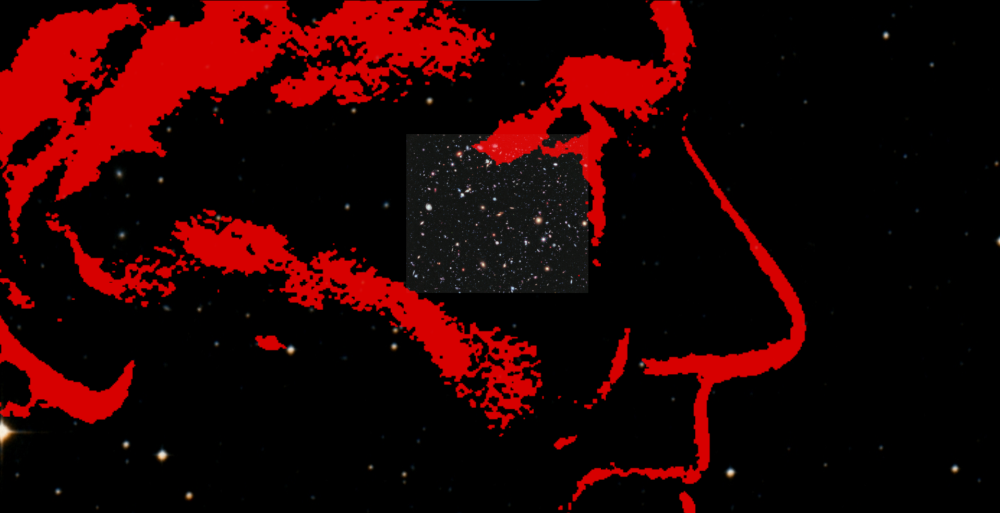

WWT has opened up a new way of visualizing astronomical imagery in the planetarium dome ushering an entirely new type of experience (the planetarium’s third wave). WWT has dramatically reduced the time and cost of planetarium productions allowing for discoveries made one day to be shown in planetarium domes across the world the next.